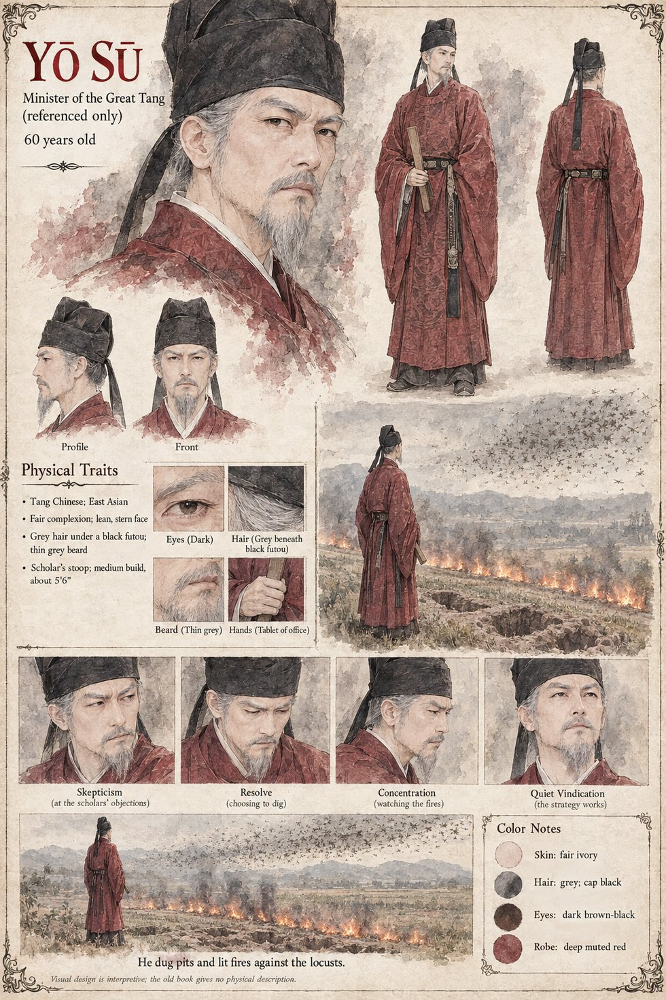

Yō Sū
Minister of the Great Tang · referenced only, three centuries before the case · 60 years old by his sheet
He is a name in a book. Higaide's father Nariyuki, a scholar in a family of soldiers, borrowed a brittle old book of the continent from the Left Ministry's library for the sake of its binding, and in it read the account of a minister of the Great Tang who faced a plague of locusts three centuries before, against the learned opinion of every scholar at his court, who held that insects were the heavens' business and not to be interfered with by a man; and who dug pits, and lit fires at night, and killed the creatures in their millions, and buried them, and was right. The name of the minister was Yō Sū. Nariyuki pronounced it to his son with a kind of private relish. A man who has read a thing in a book, he said, is permitted to be pleased when it works.
That is all the manuscript has of him, and it reaches the valley of the Lauze through one boy's memory of holding a torch. Twenty-three years later it is the ditch Higaide draws on the green, and then the one he digs, and on the morning of the twenty-seventh of Havren, standing among the dead below the Dawn Wall, he sets what his father's book was worth against the bulk of the swarm and finds, with the cool clarity of an exact mind, that it is about a fiftieth part. The Log's own reckoning is that the works at the Throat held the swarm in the gorge five point one days longer than an open crossing would have, long enough for the strain to do what it does. He was right, as the minister was right, about the wrong thing. The manuscript gives Yō Sū a name, a country, an office and an act. The sheet's sixty years, medium five-foot-six build with a scholar's stoop, lean stern fair-skinned face, grey hair under a black cap, thin grey beard, dark eyes and dark-red official's robe are its own.